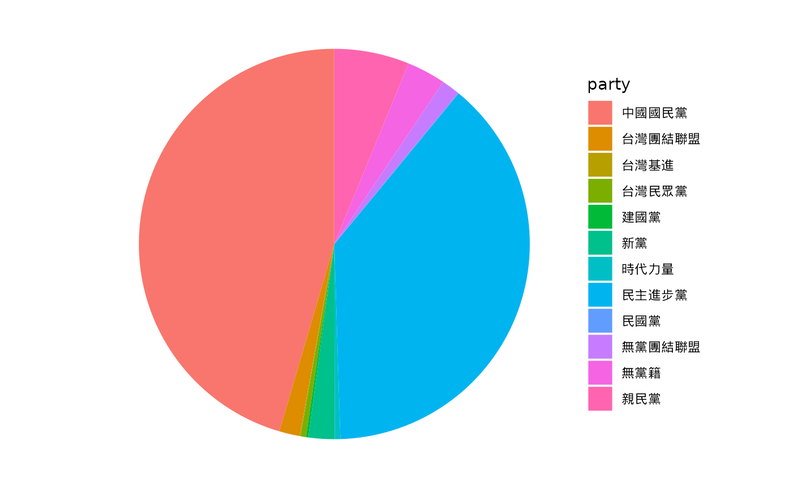
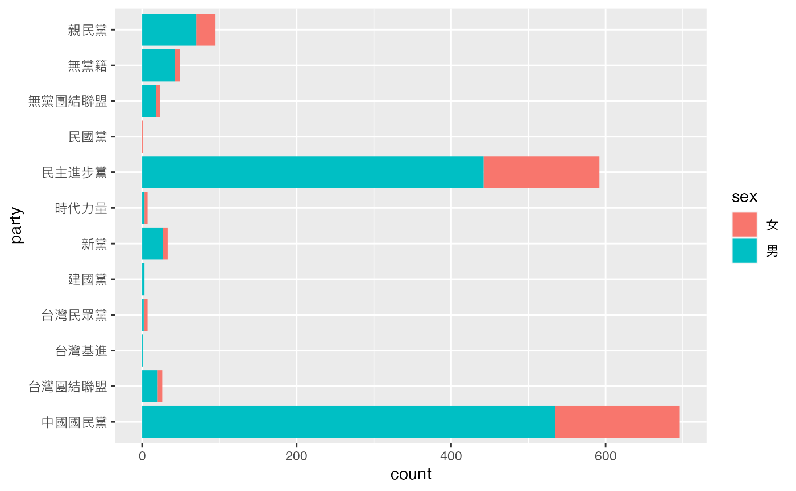

以get_legislators()
抓取「歷屆委員資料」為例
library(legisTaiwan)
#> ## legisTaiwan ###
#> ## An R package connecting to the Taiwan Legislative API. ###
library(tidyverse)
#> ── Attaching packages ───────────────────────────────── tidyverse
#> 1.3.2 ──
#> ✔ ggplot2 3.4.1 ✔ purrr 1.0.1
#> ✔ tibble 3.1.8 ✔ dplyr 1.1.0
#> ✔ tidyr 1.3.0 ✔ stringr 1.5.0
#> ✔ readr 2.1.4 ✔ forcats 1.0.0
#> ── Conflicts ──────────────────────────────────── tidyverse_conflicts() ──
#> ✖ dplyr::filter() masks stats::filter()
#> ✖ dplyr::lag() masks stats::lag()
info <- get_legislators(verbose = FALSE)
#> term is not defined...
#> You are now requesting full data from the API. Please make sure your connectivity is stable until its completion.
legislators <- info$data使用tidyverse協助做資料整理，計算「性別」之個數。
計算「黨籍」之個數
legislators %>%
count(party)
#> # A tibble: 12 × 2
#> party n
#> <chr> <int>
#> 1 中國國民黨 696
#> 2 台灣團結聯盟 26
#> 3 台灣基進 1
#> 4 台灣民眾黨 7
#> 5 建國黨 3
#> 6 新黨 33
#> 7 時代力量 7
#> 8 民主進步黨 591
#> 9 民國黨 1
#> 10 無黨團結聯盟 23
#> 11 無黨籍 49
#> 12 親民黨 95製作直方圖
library(ggplot2)
party <- legislators %>%
count(party)
ggplot(data = legislators, aes(x = party)) +
geom_bar() +
theme(text = element_text(family = "Heiti TC Light"))
製作圓餅圖
party_1 <- table(legislators$party)
party.freq <- data.frame(party_1)
names(party.freq)[1] <- "party"
ggplot(data = party.freq, aes(x = "", y = Freq, fill = party)) +
geom_bar(stat = "identity", width = 1) +
coord_polar(theta = "y", start = 0) +
theme_void()+
theme(text = element_text(family = "Heiti TC Light"))
查看不同性別於不同政黨中之比例
ggplot(data = legislators, aes(x = party, fill = sex)) +
geom_bar(position = "stack") +
# theme(text = element_text(family = "Heiti TC Light")) +
coord_flip()